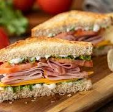

Home
Sandwich

Description
A Grilled Cheese, Corn, and Capsicum Sandwich is a fun spin on the classic grilled cheese.
It’s packed with melty cheese, sweet corn, and smoky grilled capsicum (bell peppers). The bread gets nice and crispy, while the cheese stays gooey and delicious.
The corn adds a sweet touch, and the capsicum gives it a nice smoky flavor.
It’s super easy to make, super tasty, and perfect for a quick snack or lunch!
Ingredients
- 2 slices of bread
- 2 slices of cheese
- ½ cup sweet corn kernels
- 1 small capsicum (bell pepper), sliced
- 1–2 tablespoons butter (for grilling)
- Salt and pepper to taste
- A pinch of chili flakes or herbs like oregano or basil for extra flavor
Steps
- Slice the capsicum (bell pepper) into thin strips.
Heat a little oil or butter in a pan over medium heat and cook the capsicum for about 4-5 minutes, until it’s slightly charred and soft.
Set aside.
- If you're using fresh or frozen corn, quickly sauté it in the same pan for about 2-3 minutes, just to heat through. (If you're using canned corn, simply drain and rinse it.)
- Spread a thin layer of butter on one side of each slice of bread. This will help create a golden, crispy crust when grilling.
- Place one slice of bread, buttered side down, onto a clean surface.
- Layer the cheese slices on top of the bread.
- Add the cooked corn and grilled capsicum on top of the cheese.
- Place the second slice of bread on top, buttered side facing up.
- Heat a non-stick skillet or pan over medium heat.
Once hot, place the sandwich into the pan and grill for 3-4 minutes on each side, pressing down lightly with a spatula to help the cheese melt evenly.
- Flip carefully when the first side is golden brown and crispy. Grill the other side for another 3-4 minutes until golden and the cheese is gooey.
- Once both sides are crispy and the cheese has melted, remove the sandwich from the pan.
Let it sit for a minute before slicing it in half. This helps the cheese set and makes it easier to eat